A mod for Helix: Feed The World that flips the game around. For once, you're the monster, and Helix is the one trying to survive.
Download the modv1.7.1 · unzip into your game folder
Two ways to play. Pick one to see how it works:
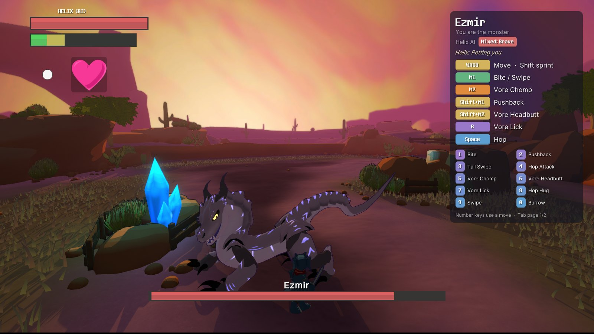
Pick a stage and you control the monster. Its attacks, grabs and special moves are all yours, and Tab shows the full list.
Helix is played by an AI, and I tried hard to make it feel like a person on the other end rather than a punching bag:
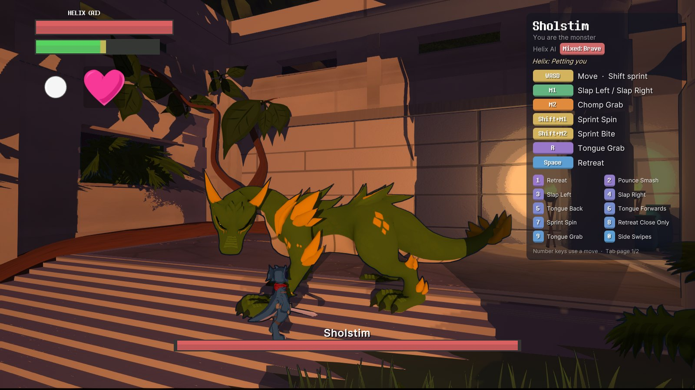
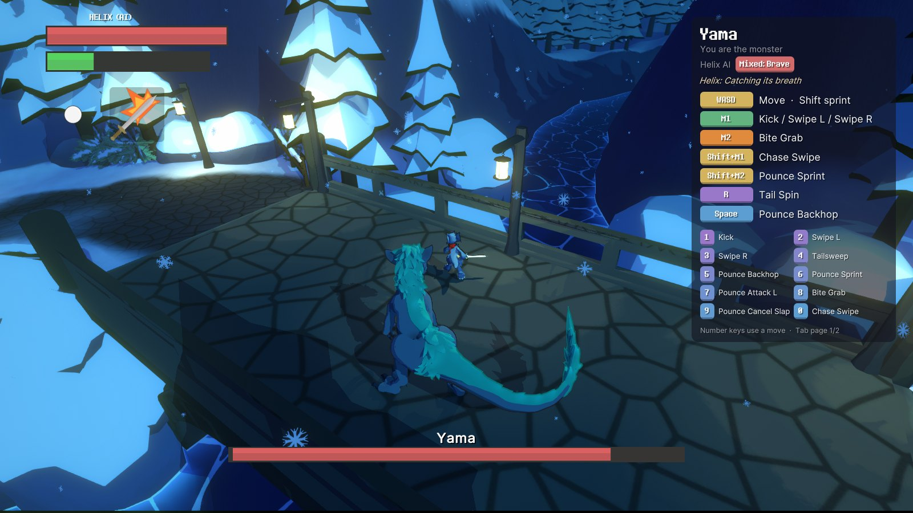
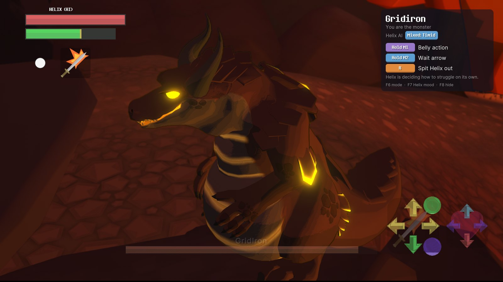
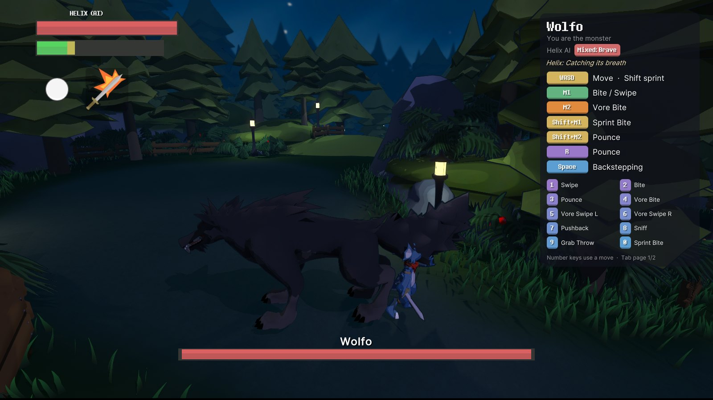
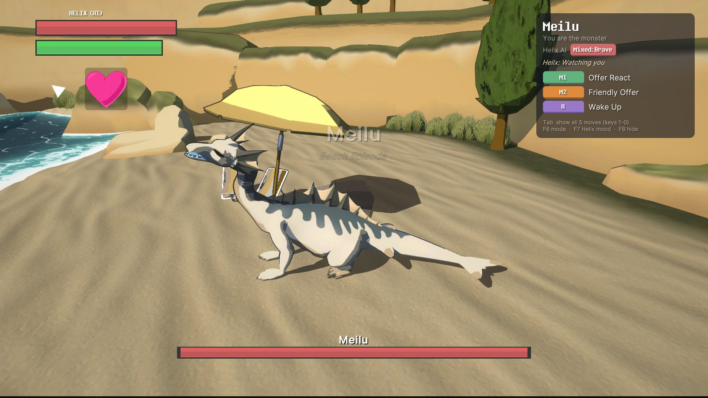
Controllers work too.
Want a real opponent? Play online →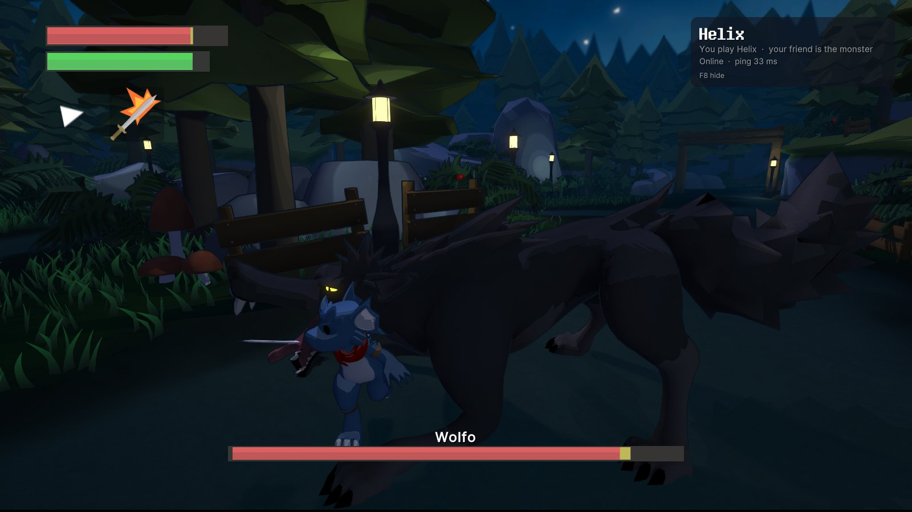
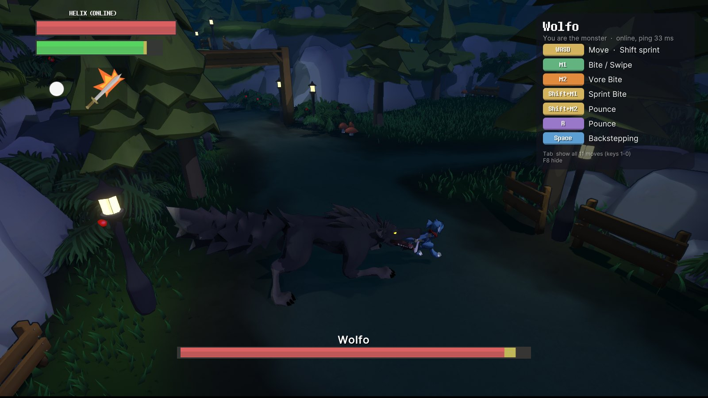
One of you plays Helix, the other plays the monster, each on your own PC with your own camera. You meet in a lobby, chat, pick a stage, and the host starts the fight. You can keep chatting during the fight too.
You both need the same version of the mod. Open Play online in the main menu.
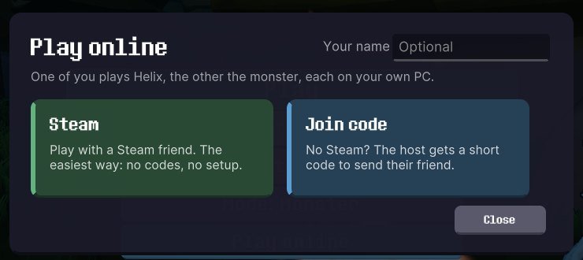
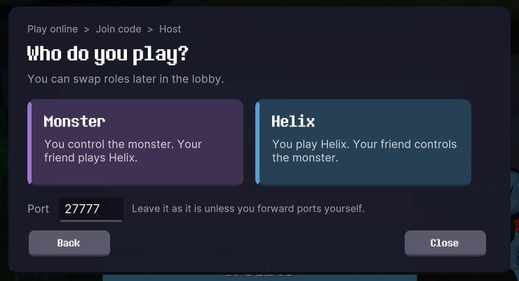
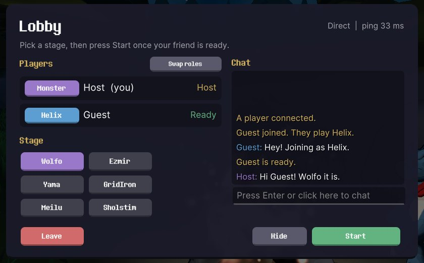
The easiest way. The host invites you from the lobby, or you find them under Steam > Join. Both of you need Steam running.
While you use it, Steam shows you as playing "Spacewar". That's normal, the mod borrows Valve's free test app for invites.
No Steam needed. The host's router opens the port by itself and the lobby shows a short code like K7F2Q-9QXA3-M to copy and send.
Some routers don't allow this. The lobby tells you when that happens, and Steam still works.
Everything else is the normal controls for whoever you play. When the host goes back to the menu, you both land in the lobby for the next round.
Rather play solo? Play as the monster →HelixFTW.exe.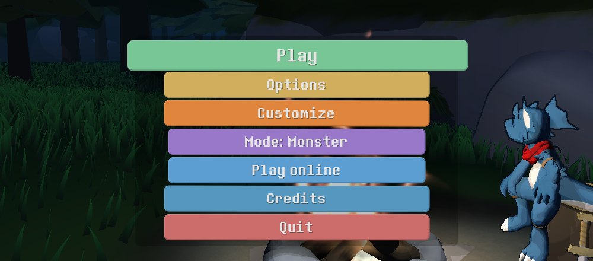
To uninstall, delete BepInEx\plugins\HelixMonsterPlay.
Expect bugs, especially online. Some moves only work in their original setup, and the AI still does odd things now and then.
If something breaks, send me BepInEx\LogOutput.log from your game folder and tell me what you were doing.